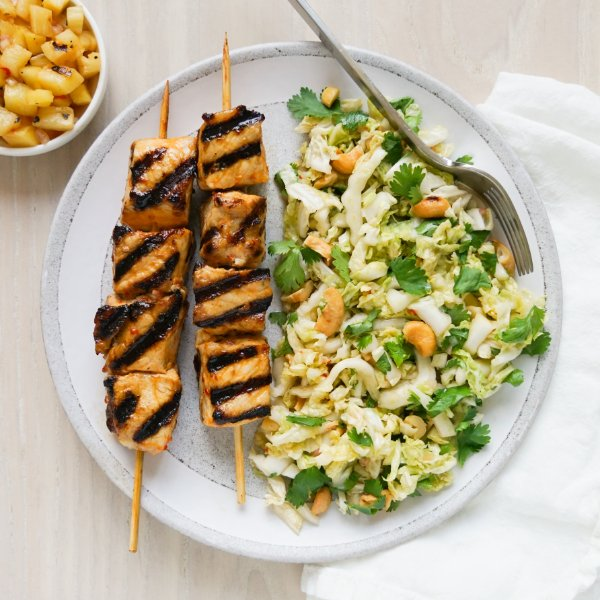

Grilled Spicy Asian Pork Skewers with Pineapple Salsa & Cabbage Slaw

Total Time
40 min
Nutrition (per serving)
670.7 kcalCalories
38.6 gProtein
38.2 gCarbs
43.4 gFat
Full nutrition table
| Calories | 670.7 kcal |
| Total fat | 43.4 g |
| Saturated fat | 10.5 g |
| Trans fat | 0.2 g |
| Cholesterol | 94.7 mg |
| Sodium | 185.8 mg |
| Carbohydrates | 38.2 g |
| Fiber | 6 g |
| Sugars | 22.1 g |
| Protein | 38.6 g |
| Potassium | 1473.7 mg |
| Calcium | 230.4 mg |
| Iron | 3.5 mg |
| Vitamin A | 824.6 IU |
| Vitamin C | 126 mg |
| Vitamin D | 17.8 IU |
Cookware
Ingredients
- ½ cupcashews, roasted unsalted
- 1 small bunchcilantro
- 2limes
- 1 medium headnapa cabbage
- 1 smallpineapple
- 4pork chops, boneless
- 1shallot
- brown sugar
- chili-garlic sauce
- extra virgin olive oil
- fish sauce
- mayonnaise
- salt
- soy sauce
Steps
- If using wooden skewers, place 8-12 skewers in a shallow dish of water to soak until you are ready to use them.
- Wash and dry the fresh produce.1 small pineapple
2 limes
1 medium head napa cabbage
1 small bunch cilantro - Cut off skin from pineapple; quarter, core, and slice lengthwise into thick planks. Place planks on a plate, then drizzle with oil and season with salt on both sides.4 tsp extra virgin olive oil
¼ tsp salt - Preheat a grill pan, outdoor skillet, or regular skillet over medium-high heat.
- Once the pan is hot, working in batches if necessary, add the pineapple planks and grill, turning occasionally, until tender and charred in spots, about 8 minutes. Return to the plate.
- Meanwhile, place mayo, chili-garlic sauce, and salt in a medium bowl, then whisk to combine the marinade.¼ cup mayonnaise
1 tbsp chili-garlic sauce
½ tsp salt - Pat the pork dry with paper towels and cut into 1-inch cubes. Add to the bowl with the marinade and stir to coat.4 pork chops, boneless
- Thread pork onto skewers and place on another plate. Alternatively, you can cook the pork pieces directly on the grill pan without using skewers.
- Return the pan to medium-high heat; working in batches if necessary, add the pork skewers and grill, turning occasionally, until the pork is charred and cooked through, about 8 minutes. Remove to a clean plate.
- Meanwhile, using a clean cutting board, peel and mince shallot. Place in a clean medium bowl.1 shallot
- Juice limes into the bowl with the shallot, then add fish sauce, soy sauce, sugar, and chili-garlic sauce. Whisk to combine the dressing and set aside.2 tbsp fish sauce
2 tbsp soy sauce
4 tsp brown sugar
2 tsp chili-garlic sauce - Small dice pineapple, return to the plate, and drizzle with half of the dressing. Stir to combine the salsa and set aside. (Reserve remaining dressing for the next step.)
- Trim off and discard root end of cabbage; halve lengthwise, then slice crosswise into thin (shred-like) strips. Add to the bowl with the reserved dressing.
- Shave cilantro leaves off the stems; discard stems and roughly chop the leaves. Add to the bowl.
- Roughly chop cashews. Add to the bowl and toss to combine the slaw.½ cup cashews, roasted unsalted
- Divide skewers and slaw between plates. Serve with pineapple salsa on the side and enjoy!